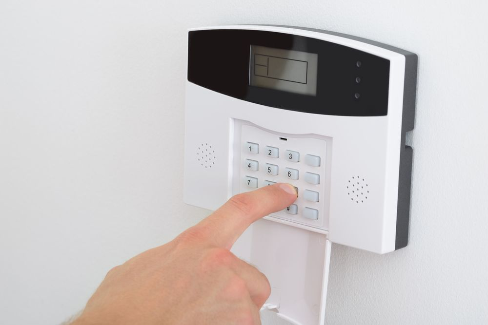
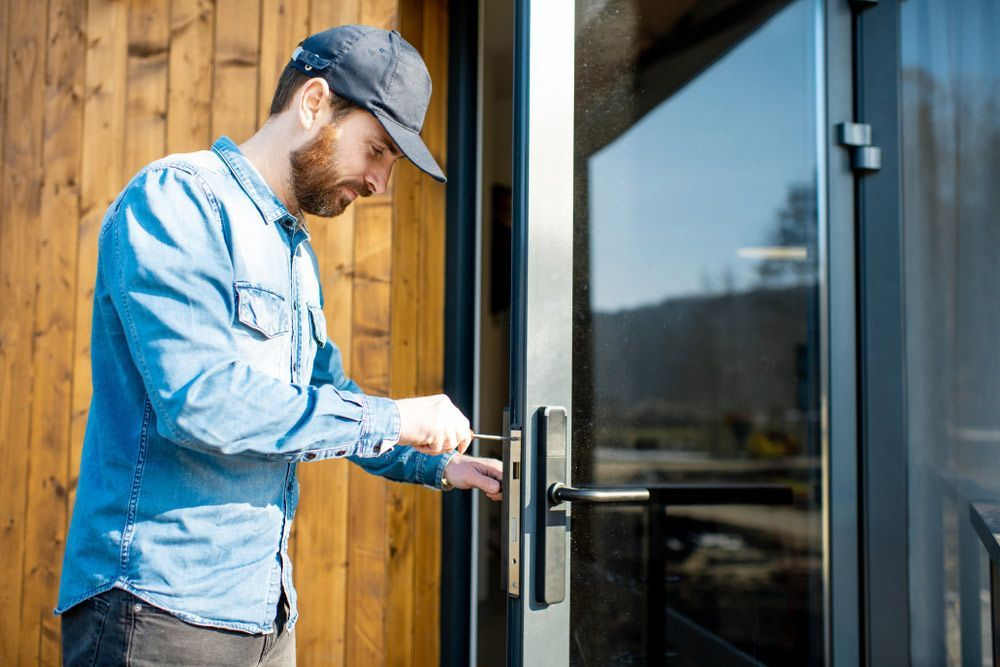

On this page
AT A GLANCE
Security is a top priority for residents and business owners in Palm Beach.
Get A Free Quote Now!
Thank you for contacting SPL Security Solutions.
We will be in touch soon.

Protection for Homes, Cars & Businesses
Security is a top priority for residents and business owners in Palm Beach. At SPL Security Solutions, our comprehensive range of locksmith services offers advanced solutions to safeguard against potential threats. From key cutting to access control systems, our team has the expertise to provide tailored security services based on individual needs and budget.
With years of experience in the industry, our professionals are equipped to handle any security challenge with precision and efficiency. We work closely with our clients to design a comprehensive security plan that not only meets their current needs but also adapts to future requirements. With our commitment to providing reliable and professional services, we ensure the safety and security of our community in Palm Beach.
For more information on our comprehensive range of locksmith services, call us on (07) 5588 8111.
Our residential locksmith services ensure your home's security isn't left to chance. We expertly install, repair and rekey locks, while also providing a reliable key duplication service. Should you find yourself locked out, our emergency team is ready to respond quickly and get you back indoors. With our team on hand to help, you'll always feel secure.
In Palm Beach, our commercial locksmith services are tailored to meet the specific needs of local businesses. We undertake comprehensive security assessments and install high-quality locks, master key systems and access control solutions as required. Our team is also available for emergency assistance and can advise on the best security measures for your business.
Locked out of your car in Palm Beach? Our automotive locksmith services are just a call away. Our team specialises in key replacement, duplication and transponder programming for all types of vehicles. We can also repair or replace malfunctioning ignitions to get your car started smoothly. With our 24/7 emergency assistance, you never have to worry about being stranded without help.
Rest assured that your property in Palm Beach is safe and secure with our restricted key systems. These advanced solutions prevent unauthorised duplication of keys, providing a reliable way to control access and limit the risk of unwanted entry. With our custom designed systems, you can protect your assets and sensitive areas with confidence.
Palm Beach residents and businesses can select from our carefully chosen range of safes including high-security models for business documents and takings all the way to smaller safes for personal valuables. Protect against theft, fire and even flood. Our end to end services ensure a seamless experience, covering installation, unlock assistance and repairs.
Our integrated security systems in Palm Beach provide businesses and homeowners with advanced surveillance and monitoring capabilities. Our solutions include CCTV cameras, alarm systems, access control and intercoms for comprehensive coverage of your premises. We can advise on the best combination of products for optimal protection and ease of use.
Our lock hardware in Palm Beach includes traditional locks, tamper-proof deadbolts, and modern electronic options. Each product is carefully selected to maximise property security and usability.
Our Palm Beach door hardware includes robust handles, energy-efficient closers and weatherproof hinges. These products are designed to withstand the elements while ensuring seamless operation.
From fire-rated hardware to smooth-operating closers and elegant handles, our collection balances function and style for modern and traditional door designs in Palm Beach.
24/7 Emergency Locksmith Services
Emergencies can be stressful, but our team at SPL Security Solutions is here to make things easier for residents in Palm Beach. Our 24/7 emergency locksmith services provide rapid response and professional solutions for lockouts, faulty locks and more.
Whether you've simply lost your keys or need emergency lock repairs after a break-in, our team is just a phone call away. In instances of attempted or actual intrusion, we'll assess your property, including any damage due to forced entry, and provide necessary repairs or replacements to ensure your property is secure before we leave. With our mobile vans readily equipped with the latest tools and technology, we can provide on the spot lock replacements, rekeying and more.

Contact Details
24/7 Emergency Locksmiths or Security Tech


Trading Hours
Retail Shop

Frequently Asked Questions
-
What does bumping a lock mean?
Lock bumping is a lock picking technique that involves using a specially cut key, known as a bump key, to align the pins in a lock without the matching key. This method can open many traditional locks quickly and with minimal skill.
-
How effective are digital door viewers for security?
Digital door viewers can enhance security by allowing you to see who is at the door without opening it. They offer a wider viewing angle than traditional peepholes and often include features like photo or video recording, providing an added level of security.
Locksmith & Security Solutions Gold Coast, Brisbane & Northern NSW